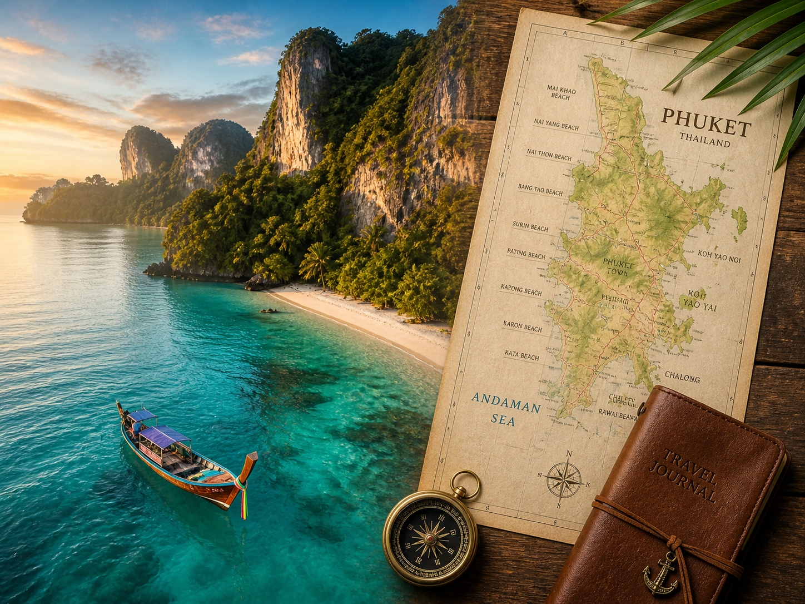

7 Days in Phuket:
The Definitive 2026 Guide
Welcome to the island of a thousand faces. Whether you're here for the pristine sands, the spicy street food, or the neon-lit nights, seven days is the perfect window to see it all—without the rush.
The Philosophy of the Perfect Week
In my 17 years working in Phuket's hospitality scene, I've seen travelers make the same mistake over and over: they try to "do" Thailand in a week. They spend four days on planes and three days exhausted. If you have seven days, stay on one island. Stay in Phuket.
Phuket isn't just one destination; it's a collection of mini-universes. You have the historic charm of Old Town, the luxury of Bang Tao, the chaos of Patong, and the raw, local beauty of Rawai. This itinerary is designed to give you a taste of every single one of them, balanced with enough "beach time" to actually go home feeling refreshed.
Logistics: Before You Touch Down
Before we dive into the day-by-day, let's talk logistics. In 2026, Phuket is smarter than ever, but it still requires some old-school savvy.
Where to Base Yourself?
For a first-timer, I recommend splitting your stay. Spend **3 nights in Old Town or Kata** for culture and accessibility, and **4 nights in Bang Tao or Kamala** for that high-end resort experience. If you stay in Patong the whole time, you'll see the "party" side of Phuket, but you'll miss the soul.
Transport Strategy
Download **Grab**, **Bolt**, and **InDrive**. Bolt is usually the cheapest, but Grab is the most reliable. For the airport, use the **Phuket Smart Bus** (100 THB) if you're on a budget, or a private van (800-1,200 THB) if you have luggage and want to save an hour of your life.
The Soul of the Island
Welcome to Phuket! After checking into your hotel, we’re heading straight to the heart of the island: **Phuket Old Town**. Most tourists skip this and head to the beach—that's their first mistake. Old Town is where the history of the island lives, a place where the tin-mining boom of the 19th century created a unique architectural and cultural blend that you won't find anywhere else in Thailand.
Morning: A Sino-Portuguese Breakfast
Start your journey at **Boon Rat Dim Sum**. This isn't your hotel buffet; it's a local institution that has been serving the community for over 100 years. The atmosphere is hectic, the tea is hot, and the dim sum is handmade every morning. Order the 'Siew Mai' (pork dumplings) and a 'Kopi O' (traditional black coffee with sugar). It’s cheap, loud, and incredibly authentic. If you're still hungry, walk a few blocks to **Aing Jue** for some of the best 'Hokkien Noodles' on the island—a thick, gravy-based noodle dish that reflects the island's Chinese heritage.
Afternoon: The Architecture & History Walk
Wander down **Thalang Road** and **Soi Romanee**. The colorful shophouses with their characteristic "five-foot-ways" (arcade walkways) aren't just for Instagram; they were designed to keep pedestrians dry during the monsoon rains. Stop by **The Memory at On On Hotel**. Built in 1929, it was Phuket's first hotel and served as the filming location for the "dodgy Bangkok hotel" in the movie *The Beach*. The lobby has been beautifully restored and serves as a mini-museum of Old Town's history.
Don't miss the **Thai Hua Museum**, located in a stunning former Chinese school. It offers the most comprehensive look at how the Hokkien Chinese immigrants shaped the island's economy and culture. As you walk, keep an eye out for the 'Baba-Nyonya' influence in the local fashion and food—a unique mix of Chinese and Malay cultures that is specific to the Straits settlements.
Evening: The Sunday Market or a Colonial Feast
If your Day 1 falls on a Sunday, you’re in luck. Thalang Road transforms into the **Lard Yai Walking Street Market**. It is the most vibrant market in Thailand, filled with local crafts, street food (try the 'Apong' pancakes), and live music. If it's not Sunday, head to **Tu Kab Khao** for a high-end Southern Thai dinner. Set in a grand colonial mansion, the restaurant specializes in local recipes. Order the **Moo Hong** (braised pork belly in sweet soy sauce with star anise and cinnamon)—it is the signature dish of Phuket and will change your life.
Pom’s Local Secret:
Look for the "hidden" street art in the back alleys of Phang Nga Road. There’s a massive mural of a traditional 'Red Turtle' cake by local artist Alex Face. It represents longevity and is a core part of the Por Tor festival. It’s tucked behind a small parking lot, making it the perfect quiet spot for a photo.
The Giants & The Spirits
Today is about the spiritual anchors of Phuket. We’re heading south to see the icons that define the island's skyline and its religious heart.
Morning: Sunrise at The Big Buddha
Get here early—ideally by 7:30 AM. Not just to beat the tourist buses, but to witness the sunrise over Chalong Bay in peace. The **Big Buddha** (officially Phra Phutta Ming Mongkol Akenakiri) sits atop Nakkerd Hill and is visible from almost everywhere in the south of the island. The 45-meter tall statue is covered in Burmese white marble that glows brilliantly in the morning light. As you walk up the steps, you'll hear the gentle tinkling of brass bells and the deep chanting of monks. It is a profoundly meditative start to your day.
*Etiquette Tip: This is an active place of worship. You must cover your shoulders and knees. If you forget, there are sarongs available for rent at the entrance for a small donation.*
Midday: Wat Chalong's History
A 15-minute drive down the hill brings you to **Wat Chalong**, the most significant of Phuket's 29 Buddhist temples. It is dedicated to two highly venerable monks, Luang Pho Chaem and Luang Pho Chuang, who led the citizens of Chalong sub-district against the Chinese rebellion in 1876. Visit the 60-meter tall 'Chedi' (pagoda), which contains a small fragment of Lord Buddha's bone. The walls are covered in exquisite murals depicting the life of Buddha. You will likely hear loud firecrackers being set off in a brick oven—this is a traditional way to show gratitude when a prayer is answered.
Afternoon: Nai Harn's Pristine Waters
After the temples, it's time for the beach. **Nai Harn Beach** is a local treasure. Unlike the highly commercialized beaches of Patong, Nai Harn maintains a serene, natural feel. It’s bordered by a freshwater lake and a Buddhist monastery, which has prevented over-development. The water quality here is consistently the best on the island during the dry season. For lunch, skip the big restaurants and find the small stalls under the casuarina trees at the north end of the beach. Order a **Som Tum** (papaya salad) and some grilled chicken with sticky rice.
Evening: Windmill Viewpoint
Just five minutes from Nai Harn is the **Windmill Viewpoint**. It offers an incredible view of Ya Nui Beach and the tiny island of Koh Man. It’s less crowded than Promthep Cape (which we’ll visit later) and offers a more intimate sunset experience. After sunset, head to **Rawai** for a casual dinner at **Aek Seafood**—their 'Goong Ob Woonsen' (prawns with glass noodles) is exceptional.
The Limestone Labyrinth
Today we leave the mainland. **Phang Nga Bay** is a geological masterpiece, a marine national park filled with over 40 limestone islands rising vertically from the emerald-green water. It is the definition of "Otherworldly."
The Strategy: Why You Should Go Private
While group tours are available for 1,500 THB, I strongly urge you to hire a private long-tail boat from **Klong Khian Pier** or **Ao Por Pier**. For roughly 4,000 THB, you can leave at 7:00 AM and have the most famous spots to yourself for at least an hour before the speedboats arrive from Phuket and Krabi. Being alone in a silent lagoon is worth every extra cent.
Stop 1: The 'Hongs' of Panak Island
Your guide will take you on a sea canoe through dark, narrow caves that lead into hidden "Hongs" (rooms). These are collapsed cave systems inside the islands that form secret lagoons open to the sky. Look up and you'll see ancient mangroves clinging to the limestone cliffs and perhaps a family of macaques or a monitor lizard swimming by. The silence inside a Hong is magical.
Stop 2: Koh Panyee (The Village on Stilts)
Visit **Koh Panyee**, a Muslim fishing village built entirely on stilts. Settled by three Indonesian families 200 years ago, it now houses over 300 families. It has its own school, mosque, and even a floating football pitch. For lunch, try the fresh **Fried Soft-Shell Crab with Garlic** at any of the waterfront stalls. Take time to walk to the back of the village away from the souvenir shops to see the real daily life of the community.
Stop 3: James Bond Island (Khao Phing Kan)
Made famous by the 1974 film *The Man with the Golden Gun*, this is the most photographed spot in the bay. The iconic leaning rock and the 'Koh Tapu' needle are sights to behold. If you arrive early with your private boat, you can walk the beach and explore the caves without the 500 other people who will be there by noon.
Ethical Encounters & Beach Chic
Phuket is a place of contrasts. Today we balance the raw beauty of the jungle with the sophisticated luxury of the West Coast.
Morning: A Lesson in Compassion
Phuket has a complicated history with elephant tourism. As your local host, I only recommend **true ethical sanctuaries**. The **Phuket Elephant Sanctuary** in Paklok is the pioneer of ethical tourism on the island. Here, retired elephants from the logging and trekking industries are allowed to live out their lives in peace. There is no riding, no bathing, and no performance. You simply walk with a guide through the jungle and observe these magnificent creatures from a respectful distance. It is an educational and often emotional experience that funds the rescue of more elephants.
Afternoon: The Long Curve of Bang Tao
Head to the West Coast to check into your second base. **Bang Tao** is one of Phuket's longest beaches and home to the **Laguna Phuket** complex—a 1,000-acre tropical parkland. The beach here is pristine and offers a much more relaxed vibe than the central tourist hubs. Spend your afternoon swimming or take a stroll through the **Boat Avenue** area for some boutique shopping.
Evening: Sunset at a Beach Club
Phuket’s beach club scene is world-class. For a sophisticated sunset, head to **Catch Beach Club** or the newer **Carpe Diem Beach Club**. As the sun sets, the DJs start their sets, fire performers take to the sand, and the atmosphere becomes electric. For dinner, try the Mediterranean fusion at **Maya Beach Club**—their grilled octopus is a local favorite.
The Andaman Odyssey
Today is dedicated to the world-famous islands of the Andaman Sea. Depending on the time of year, you have two legendary options.
Option 1: The Similan Islands (November – May)
If you are visiting during the high season, the **Similan Islands** are non-negotiable. Located 84km northwest of Phuket, they are a protected marine park with some of the best diving and snorkeling in the world. The granite boulders and powdery white sand look like a movie set. Visit 'Sailing Boat Rock' for the iconic viewpoint. Note: The trip involves a 1.5-hour drive to Khao Lak and an hour-long speedboat ride, so it’s a long day, but the water clarity is unmatched.
Option 2: The Phi Phi Islands (Year Round)
If it's the low season, or if you want that classic "The Beach" experience, head to **Phi Phi**. Again, I recommend a "Sunrise Tour" to avoid the heavy afternoon crowds. Start at **Maya Bay** (be sure to check if it's open, as it closes periodically for coral recovery). Even if you can't swim in the bay, walking the sand is breathtaking. Continue to **Pileh Lagoon**, an emerald canyon where the water is so clear you can see the bottom from the boat. Finish your day with a stop at **Monkey Beach** and some snorkeling at **Shark Point**.
Pom’s Pro Snorkeling Tip:
Don't feed the fish! It disrupts the local ecosystem and can lead to aggressive behavior. Also, please use reef-safe sunscreen. In 2026, many national parks in Thailand have banned sunscreens containing oxybenzone and octinoxate to protect our fragile coral reefs.
Rawai & The Southern Tip
We’re heading back south today to experience the raw, local side of Phuket that remains largely untouched by the massive resort developments.
Lunch: The Sea Gypsy Seafood Market
Head to the **Rawai Seafood Market** for a unique dining experience. Walk along the pier where the local 'Moken' (Sea Gypsy) fishermen sell their daily catch. You buy the seafood directly from them—live lobster, tiger prawns, blue crabs, and snapper—then you take it to one of the restaurants across the street (like **Mook Manee**) and they will cook it for you for a small fee (around 100 THB per kilo). It is the freshest and most affordable seafood feast you can find on the island.
Afternoon: Ya Nui & Snorkeling
Just around the corner is **Ya Nui Beach**, a tiny cove tucked between two rocky headlands. It is the best spot on the island for snorkeling right off the beach. Rent a kayak and paddle out to **Koh Man**, the small island 200 meters offshore. The water between the beach and the island is filled with colorful parrotfish and sergeant majors.
Sunset: The Promthep Cape Ritual
Every night, hundreds of people gather at **Promthep Cape** to watch the sun sink into the Andaman Sea. It is a local ritual. For a better experience, don't stay at the crowded viewpoint. Follow the narrow dirt path that leads down to the very end of the rocky promontory. It's a 15-minute hike, but you'll have a front-row seat to the horizon with the wind in your hair and the sound of waves crashing against the rocks below.
Slow Living & Departure
On your final day, I want you to slow down. Let the island's rhythm sink in before you head back to the "real world."
Morning: The Ultimate Spa Ritual
No trip to Thailand is complete without a proper spa experience. I recommend **Oasis Spa** (specifically their Kamala or Bang Tao branches). Book the "King of Oasis" or "Queen of Oasis" package—a 2-3 hour journey that includes herbal steam, a tamarind and honey body scrub, and a four-hand massage. It will leave you feeling lighter than air for your flight home.
Midday: Art & Luxury Shopping
For your final meal and some last-minute shopping, head to **Central Phuket Floresta**. This is not your average mall. The architecture is inspired by Thai myths, and it houses the **Aquaria Phuket** (Thailand's largest aquarium). Visit the 'Tales of Thailand' market on the ground floor for high-quality, authentic handicrafts, Thai silk, and local spa products that make perfect gifts. For lunch, try **Suay Restaurant** inside the mall for a modern take on Thai-European fusion by Chef Noi.
Evening: One Last Sunset
If you have an evening flight, head to **Mai Khao Beach** (near the airport). It is an 11km stretch of untouched sand. Watch the planes come in low over the water—a famous Phuket photo op—and take one last breath of the salty Andaman air. As we say in Thailand, "Mai Pen Rai"—don't worry, the island will be here waiting for your return.
Pom's Final Advice for First-Timers
Phuket is a place of deep beauty, but it rewards those who respect it. Smile often, learn a few words of Thai ('Sawatdee-kap' for hello, 'Kop-khun-kap' for thank you), and be patient with the traffic. The island is growing fast, but its heart remains the same. I've spent nearly two decades here, and I still find magic in the smell of street-side satay and the sound of the evening prayer calls in the south. I hope this week has shown you why I call this island home.